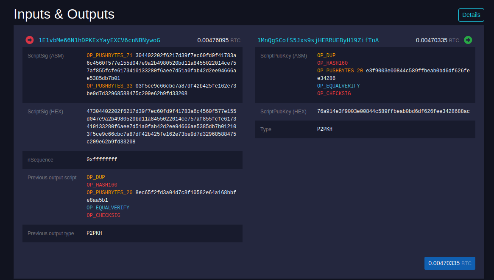
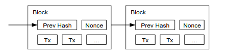
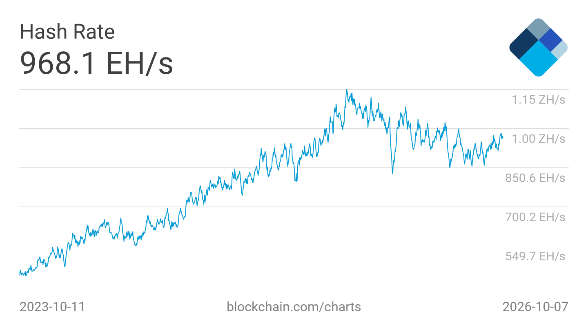

12 Synchronous blockchains
Announcements
- Please pick up your card
- HW 5 due Wednesday 10/21 at 8pm
- Exam 2 during lecture on Monday 10/26, covering:
- Lectures 8-12 (includes today’s lecture, but Wednesday will be part of Exam 3)
- Labs 5-7 and associated textbook reading
- Homework 4-5
- Lab 8 on this week’s reading (Rosulek section 1) and Exam 2 review
Learning outcomes
By the end of today’s lecture, you will learn:
- How randomness can improve Byzantine Broadcast, at least if we move away from a strict worst-case notion of security and allow a small probability of error
- How to design a permissioned blockchain, given any Byzantine Broadcast protocol and fair coin tossing protocol
Review from last lecture
Bitcoin carefully constructs and combines two components: broadcast and leader election. In the last lecture, we introduced the question:
Can we build a blockchain to achieve consensus on messages sent over the Internet with no proof of work? No miners? Maybe not even a cryptocurrency?
Last time, we designed a protocol for Byzantine Broadcast:
- There are \(n\) total parties, and an unknown subset of \(t\) parties are malicious
- The leader is trying to send a message to everyone
- All honest parties want to reach common knowledge on a message, even if the leader is malicious


Synchronous Byzantine Broadcast protocols must satisfy three requirements.
- Termination: all honest parties eventually produce an output
- Validity: if the leader is honest, then all honest parties output the leader’s intended message
- Consistency: all honest parties have the same output (whether or not the leader is honest)
Here is a high-level description of the phase-king protocol:
- It proceeds in \(t+1\) phases, and one party is the “king” in each phase, starting with the leader
- Each phase contains 3 rounds of communication: the king sends a message to everyone, and then the parties use Gradecast to check if their messages are consistent
This protocol satisfies:
- Validity because an honest leader will send a consistent message to everyone in the first phase, after which everyone will become “stubborn” and keep this message forever
- Consistency after the first phase that is run by an honest king (if not earlier) because an honest king will send the same message to everyone
Consistency is related to the common knowledge principle: each honest party knows the output, and they know that every other honest party knows the output, and they know that the others know that they know the output, etc.
12.1 The power of randomness
Let’s continue our exploration of Byzantine Broadcast in the synchronous model. Note that both Dolev-Strong and phase-king require at least \(t\) rounds to reach consensus.
|
|
Dolev-Strong |
Phase-King |
|---|---|---|
|
Number of malicious parties |
\(t \leq n\) | \(t \leq \frac{n-1}{3}\) |
|
Synchronous network |
YES | YES |
| PKI |
YES |
NO |
|
Number of rounds |
\(t+1\) | \(3(t+1)\) |
Question. Can we do better?
Theorem 12.1 (Dolev-Strong) No deterministic protocol (even with a PKI) can achieve Byzantine Broadcast in fewer than \(t + 1\) rounds.
We are not going to prove this theorem generically. But let’s see why it is true for the phase-king protocol specifically.
- Consistency is only guaranteed after a phase that is run by an honest party
- In the worst case, it could be the case that our adversary has corrupted the first \(t\) parties, so we need \(t+1\) phases
But what if we consider a protocol that makes random and unpredictable choices? Can we do better? How could we even take advantage of randomness to foil the adversary?
Integrating CommonCoin into phase-king
Recall from Lecture 4 that a common coin flip involving \(n\) parties can achieve strong security objectives.
- Common view: once the coin is flipped, everyone can agree on the result
- Unpredictability: no coalition of \(t < n\) parties know what the result of the coin will be in advance.
- Unbiasedness: no coalition of \(t < n\) parties can influence or bias the outcome of the coin away from a 50-50 chance of heads vs tails
Question. Using a CommonCoin protocol over the Internet, can we build a Byzantine broadcast protocol that completes in fewer than \(t+1\) rounds?
Answer. Here is one option:
- The leader acts as the king in the first phase, as usual
- In between phases, run the CommonCoin protocol to toss many coins, and use the sequence of heads/tails to select a new king
- Then run an iteration of the normal phase-king protocol: the randomly-elected king sends a message, and parties will adopt it unless they were already happy in a previous phase
Suppose that \(n = 3t + 1\); that is, there are approximately \(2/3\) honest parties and \(1/3\) malicious parties. Let’s calculate how many phases of this protocol we need to run, in order to be convinced that there has been one phase led by an honest party with overwhelming probability.
- A CommonCoin guarantees that the choice of leader is unbiased, so each phase individually has a \(2/3\) chance of being led by an honest party
- If we run for \(k\) phases, then the probability that there are no honest leaders is \(\left(\frac{1}{3}\right)^k\)
- Hence, the probability of having at least one phase with an honest leader is \(1 - \left(\frac{1}{3}\right)^k\)
This is a powerful observation!
Interactive question. Suppose there are \(n = \text{1,500,000}\) parties, and \(t = \text{500,000}\) of them are malicious. With the deterministic phase-king protocol from the previous lecture, how many phases are required?
- Between 10 and 100
- Between 100 and 1000
- Between 1000 and 1 million
- Greater than 1 million
Interactive question. Suppose there are \(n = \text{1,500,000}\) parties, and \(t = \text{500,000}\) of them are malicious. With the randomized phase-king protocol that chooses each leader uniformly at random from a CommonCoin, how many phases are required to be 99.9999999999% certain of reaching consensus (i.e., with only 1 in a trillion error)?
- Between 10 and 100
- Between 100 and 1000
- Between 1000 and 1 million
- Greater than 1 million
Answer. Deterministic phase-king scales linearly with the number of parties, whereas randomized phase-king only depends on the probability of error.
- To be 100% certain of reaching consensus, we must run phase-king for \(t+1 = \text{500,001}\) phases
- To be 99.9999999999% certain of reaching consensus (i.e., up to 1 in a trillion error), we must run 26 phases
12.2 Fair CommonCoin with penalties
Randomized phase-king requires fair coin tosses where all outcomes are equally likely. However, the two-party CommonCoin protocol we built in Lecture 4 is biased.
The commit-and-reveal CommonCoin protocol:
- Alice randomly chooses bit \(a \in \{0, 1\}\) and sends commitment \(c_a = \text{Commit}(a)\)
- Bob randomly chooses bit \(b \in \{0, 1\}\) and sends commitment \(c_b = \text{Commit}(b)\)
- Alice opens \(a\), and Bob verifies it against the commitment \(c_a\)
- Bob opens \(b\), and Alice verifies it against the commitment \(c_b\)
If both openings are valid, then the parties output heads if \(a = b\) and tails otherwise. (Note: the commitments are randomized, and the openings must include this randomness, though for brevity they are not written above.)
Why can a malicious Bob bias the coin toss?
- He learns the output of the coin toss after step 3
- If he does not like the output, then he can refuse to send a message to Alice in step 4, so she will never learn the output
This issue is unavoidable: if Mallory controls at least 50% of the parties, then it is impossible to build a fair coin tossing protocol over the Internet (Cleve 1986).
Theorem 12.2 For any \(r\)-round CommonCoin protocol, if Mallory controls \(\geq \frac{1}{2}\) of the parties, then she can bias the coin so that an outcome (heads or tails) occurs with probability \(\geq \frac{1}{2} + \Omega(\frac{1}{r})\).
There are two ways to sidestep this issue.
- Honest majority: we will see in Unit 4 how to design a fair CommonCoin if there are more honest than malicious parties (which is the case with phase-king)
- Financial penalties: we can economically disincentivize Mallory from biasing the CommonCoin protocol
Smart contracts
So far, I have said that a Bitcoin transaction has the form “\(pk_{\text{Alice}}\) pays 1 coin to \(pk_{\text{Bob}}\).”
Actually, a Bitcoin transaction can be more sophisticated than this. It is a computer program that can make and enforce financial decisions; in other words, it is a contract that is enforced by the nodes and miners.

Question. In our two-party CommonCoin protocol, can you think of a way to use automatically-enforced contracts to guarantee fairness?
This is a challenging question!
- One appealing idea is for Bob to build a smart contract in step 2 that says “if Alice does not receive my message in step 4, then I hearby pay her $10”
- But we cannot prove a negative: even if Alice does receive Bob’s message, she can always pretend to have missed it
- Hence, we must only make smart contracts for positive actions
Claim-or-refund contracts
Bentov and Kumaresan (Bentov and Kumaresan 2014) provided an elegant solution to this problem based on a Bitcoin smart contract that they call a “claim-or-refund.” I will describe it in the two-party setting, though it generalizes to support any number \(n\) parties of whom only one needs to be honest (the anytrust setting).
The idea is for Alice and Bob to pay each other to open their respective commitments. This new CommonCoin protocol takes 5 rounds, with changes highlighted.
- Bob sends commitment \(c_b\)
- Alice sends commitment \(c_a\) and posts a smart contract \(A_{q, \alpha, c_a, c_b}\)
- Bob posts smart contract \(B_{q, \beta, c_a}\)
- Alice opens \(a\) and receives \(q\) coins from Bob’s smart contract \(B_{q, \beta, c_a}\)
- Bob opens \(b\) and receives \(q\) coins from Alice’s smart contract \(A_{q, \alpha, c_a, c_b}\)
Bob’s smart contract \(B_{q, \beta, c_a}\) locks \(q\) coins in escrow until time \(\beta\).
- Alice can redeem the coins by posting an opening to commitment \(c_a\)
- Otherwise, the coins are returned to Bob
Why should Bob pay Alice to do the right thing? Because she makes an equal and opposite contract!
Going back to step 1: Alice will post on the blockchain a smart contract \(A_{q, \alpha, c_a, c_b}\) that:
- Locks \(q\) of Alice’s coins in escrow until time \(\alpha > \beta\)
- Allows Bob to redeem the coins if he can posts openings to both commitments by time \(\alpha\)
This nested system of smart contracts provides a financial incentive for each party to complete their part of the protocol.
- In step 1, it is safe for Alice to post her smart contract \(A_{q, \alpha, c_a, c_b}\) because Bob cannot take her money unless Alice herself later agrees to open \(a\)
- In step 2, it is safe for Bob to post his smart contract \(B_{q, \beta, c_a}\) because if Alice opens \(a\) then Bob can use it to receive coins from Alice’s smart contract
- In step 3, it is in Alice’s self-interest to open \(a\) to receive \(q\) coins from Bob’s smart contract
- In step 4, it is in Bob’s self-interest to reveal \(b\) to receive \(q\) coins from Alice’s smart contract
We say that this protocol is a fair coin toss with penalties because:
- An honest party never has to pay a penalty
- If malicious Bob breaks fairness (by learning the coin toss output after step 3 but refusing to run step 4), then honest Alice is compensated with \(q\) coins
12.3 Broadcast vs. blockchains
Let’s take state of where we stand in Unit 2.
- We started by exploring the question of how to design a decentralized mechanism that reliably records financial transactions. We constructed a mechanism for doing so: the Bitcoin blockchain.
- Then we delved into the question of how to broadcast a message to a known set of parties.

Question. How are the broadcast and blockchain problems related?
There are some similarities between the problems:
- Both broadcast and blockchains involve the dissemination of data
- Both have some notion of consistency: the idea that all parties (eventually) know the data, and they know that everyone else (who is honest) knows the data too
- Both protocols are built on top of a network with point-to-point connections, where any pair of parties can communicate
But also, there are at least four differences between broadcast and blockchains.
One-shot vs long-running:
- A Byzantine Broadcast is a one-shot protocol: the sender has data, the parties talk for some number of rounds/steps, and then it terminates
- By contrast, a blockchain can add new content forever, with the goal that each atomic unit of data, called a transaction, is eventually known by everyone
Computational power:
- Byzantine Broadcast protocols do not require that much computational power — at most some digital signatures, which can be computed in less than 1 millisecond on a laptop
- The Bitcoin protocol relies upon a proof of work puzzle, which consumes a lot of electricity in order to calculate about \(10^{21}\) SHA-256 hash operations every second

Time to finalize a transaction:
- A Byzantine Broadcast protocol requires many rounds to reach consensus: \(t+1\) phases for a 100% guarantee, or 26 phases (i.e., 78 rounds) for a probabilitic guarantee
- Within the Bitcoin blockchain, most people consider a block to be finalized (probabilistically) after 6 or so blocks have been created afterward
Assumptions about the network:
- A broadcast protocol might assume that the underlying network is synchronous (e.g., Dolev-Strong or phase-king), or it may be flexible enough to operate over an asynchronous network
- The Bitcoin blockchain works even if the underlying network is asynchronous
That said, there is nothing that stops us from designing a blockchain that assumes that the network is synchronous. Let’s do that now.
12.4 Defining a blockchain
So far we have only seen a blockchain in one context: within the Bitcoin protocol.
Let’s abstract away from what we have seen in the Bitcoin context, and define the objectives of a “blockchain” more generically.
A blockchain has three types of data:
- A transaction
txis a single message. It could be a bit like 0 or 1, or a multi-bit message like “Alice pays Bob 1 coin, signed Alice.” - A block is an unordered set of several messages, typically ones that are sent around the same time.
- A log is an ordered list of blocks. The goal is to build an append-only log that can grow at the end but never shrink or change in the middle.
Log and ledger (from Lecture 8) mean the same thing. We use the word ‘log’ today in order to move away from financial terms, since a blockchain can contain any data.
Definition 12.1 (Permissioned blockchain) A permissioned blockchain protocol in the synchronous setting must distribute a log to all parties such that the following two requirements are satisfied.
Safety (also called “consistency” in Shi’s textbook): all parties have the “same” view of the linearly-ordered log. But since the log may take some time to propagate, it’s acceptable if some parties record a block in their log before other ones do.
Formally: for any pair of honest parties \(i\) and \(j\) and at any round \(r\), it must be the case that party \(i\)’s log is a subset of party \(j\)’s log, or the other way around. (Note that the logs can be identical.)
Liveness: there is some upper bound \(\Delta\) on the number of rounds that it takes for a transaction to be included in the agreed-upon log.
Formally: if an honest party receives a transaction
txat some round \(r\), then by the end of round \(r + \Delta\) all honest parties’ logs must include this transaction.
One more bit of terminology: once a single transaction tx reaches time \(r + \Delta\), we say that the transaction is finalized. This means that it has been confirmed and cannot be undone, aka double-spent, from then onward.
12.5 From broadcast to blockchains
Let’s consider the following question: starting from a Byzantine Broadcast protocol, can we construct a blockchain?
|
|
\(\Longrightarrow\) | |
|---|---|---|
| [Image source: Wikipedia] | [Image source: Nakamoto whitepaper] |
For now, let’s limit consider the easiest options of all design parameters:
There are a fixed collection of \(n\) parties that participate in the blockchain protocol forever; no party ever enters or leaves the blockchain protocol in progress.
Each of the \(n\) parties knows the identity of the other \(n-1\) parties, which is why we call this a permissioned blockchain. (By contrast, Bitcoin is a permissionless blockchain; anyone can become a node or a miner, and they don’t need to know each other or even how many miners exist.)
Assume the network is synchronous (e.g., it proceeds in rounds that each take ~1 second).
You can choose any threshold \(t \geq 1\) of malicious parties that you want, and you can use a PKI setup if you want.
Question. How might we do this?
Here is one way to build a blockchain, starting from any \(R\)-round Byzantine Broadcast protocol. We will say that the protocol proceeds in several “epochs,” each of which last for \(R\) rounds.
Epoch 1 (containing \(R\) rounds):
- Party 1 is chosen as the leader. This party collects any transactions that it has heard, and forms a block.
- All parties execute an \(R\)-round Byzantine Broadcast, with Party 1 as the designated sender.
- At the end of this epoch of \(R\) rounds: all honest parties have agreed upon some block, and furthermore if Party 1 is honest then the agreed-upon block will be the one that Party 1 chose. Honest parties add this block to their log.
Now repeat this cycle forever:
- In epoch 2 we elect Party 2 as the designated sender of an \(R\)-round Byzantine Broadcast protocol to add a block of their choice to the chain. In epoch 3 we elect Party 3 as the designated sender to propose a block to add, and so on.
- In epoch \(n+1\) we go back to the beginning and elect Party 1 as the designated sender. And so on.
Impressively, this simple construction works! You can instantiate it with Dolev-Strong if a PKI is available, with phase-king if there is no setup, or any other Byzantine Broadcast protocol that you want.
Theorem 12.3 Let BB denote any Byzantine Broadcast protocol in the synchronous setting, which can communicate messages from a particular set (e.g., one bit, or multi-bit messages) within \(R\) rounds for a network of \(n\) parties and tolerating up to \(t\) malicious parties.
Then, the above blockchain construction satisfies safety and liveness with \(\Delta = O(Rn)\), also for the same \(n\) and \(t\) and the same setup assumptions.
Proof of safety. This follows immediately from the consistency property of the underlying Byzantine Broadcast protocol.
- The broadcast protocol guarantees that at the end of each epoch, “all honest parties output the same message” for the block to add to the log in that epoch
- As a result, honest parties always have exactly the same log, because the protocol states that honest parties only append to the log at the end of each epoch
Proof of liveness. To argue this claim, let’s think about how a transaction tx might be sent by someone in the world to one or more of the \(n\) parties in the permissioned blockchain.
If a transaction
txis sent to a single honest party, then there are at most \(n\) epochs until that party becomes the designated sender and can add the transaction to a block that gets included in the log.If a transaction
txis sent to all parties, then there are at most \(t+1\) epochs until some honest party is nominated to the role of the designated sender. This party will include the transactiontxin its block (note: for now we are assuming that block sizes can be unbounded).
Since each epoch takes \(R\) rounds, and we typically think of \(t\) as being a constant fraction of \(n\): in either case it takes \(O(Rn)\) rounds to guarantee that a transaction gets added to the log.
Takeaways
Let’s step back and think about what we have just accomplished. On the one hand: this is an amazing theorem!
It states that if we know how to build Byzantine Broadcast, then in some sense we have solved the problem of making a blockchain and therefore a financial transaction system
We were able to accomplish this goal without relying on energy-consuming computing power or needing massive economic incentives to keep the miners in line
On the other hand: this blockchain protocol not that great for a few reasons.
It is really slow; that is, it takes awhile for your transactions to get included in a block. If each round takes 1 second and there are \(n = 301\) parties running phase-king with \(t = 100\) malicious parties, then each broadcast requires \(303\) seconds and liveness takes \(\text{30,603}\) seconds or about \(8.5\) hours for your transaction to be finalized.
So if you want to buy lunch, the restaurant might force you to sit there all afternoon and evening to make sure your transaction settles before they will let you leave. One nice thing about Satoshi Nakamoto’s invention is that it carefully combines Broadcast and the CommonCoin leader election system in a way that outperforms the generic combination we’ve created today.
Also, we made a lot of assumptions along the way that are unrealistic or sub-optimal for a financial transaction system, such as network synchrony and the existence of a permissioned set of \(n\) parties that will handle all financial transactions for the rest of time.
The nice thing about asynchronous, permission-less systems like Bitcoin is that they are more stable in the face of such power. For instance, Bitcoin can tolerate up to 50% of computing power being malicious whereas Byzantine Broadcast can only tolerate 33% malicious parties without a PKI. Moreover, if some people become bad – for instance, if all miners decide to censor Alice – then in a permissionless system like Bitcoin, other honest people can join the system.